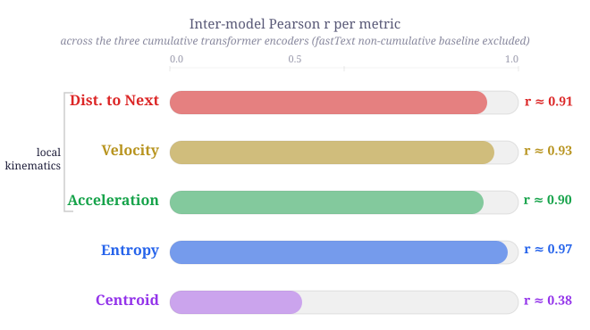

Characterizing human semantic navigation
as trajectories in embedding space
Semantic navigation: moving through concepts

Semantic retrieval is often characterized as clustering and switching; traditional pipelines are labor-intensive, heterogeneous, and miss the step-by-step granularity of how meaning unfolds over time.
Cumulative embeddings encode search history
Each step encodes the full prefix: embed "cat" → "cat dog" → "cat dog shark" … capturing dependencies and working memory. Result: a trajectory per participant × concept pairs.

Five physics-inspired trajectory metrics

① Distance to next
Cosine distance between consecutive points. Semantic jump size.
③ Acceleration
at = vt+1 − vtLow → stable cluster.
High → erratic switch.
② Velocity
vt = xt+1 − xtDirection + magnitude of each step.
④ Entropy
Shannon entropy of median-split steps. Predictability of the search.
⑤ Distance to centroid
Distance to mean position of all items. Dispersion of the search.
Four datasets, four languages, two tasks
Statistics: GLMMs with Tukey HSD post-hoc.
Neurodegenerative
ES-CL · N=76 · Property Listing · HC / PD / bvFTD
Swear Fluency
EN · N=274 · Verbal Fluency · Swear / Animals / Letters
Cross-Linguistic PLT
IT (N=69) & DE (N=73) · 10 categories · Property Listing
Embedding models
● OpenAI text-embedding-3-large
● Google text-embedding-004
● Qwen3-Embedding-0.6B
● fastText (baseline, non-cumul.)
All results reported with OpenAI.
Design choices
Causal and bidirectional attention
Cumulative vs. non-cumulative comparison
ZCA-whitening tested for anisotropy
Patient trajectories: erratic yet constricted

↑ Higher in patients
Dist. to next — larger semantic jumps
Velocity — erratic movement
Acc. — abrupt direction changes
Entropy — unpredictable search
↓ Lower in patients
Distance to centroid — search confined to a tighter neighborhood despite being more volatile
Category structure shapes semantic kinematics

Animals
Lowest kinematic values, highest centroid distance. Structured sub-categories (pets, farm, sea…) allow organized exploitation.
Swear Words
Highest kinematic values across all metrics. Taboo lexicons lack sub-category structure → high variability in a compact space.
Language/culture shape semantic organization

Italian (IT) · N=69
10 categories · Property Listing Task. Bird is reference. Building and Vehicle least separated. Category effects selective, not uniform.
German (DE) · N=73
Same 10 categories · Same protocol. Vehicle most distinct from Bird. Bird highest velocity & acceleration. Fruit vs. tool-like categories show strongest centroid gaps.
Cumulative wins for long sequences

Cum. → long sequences
Longer trajectories provide rich context: more significant group differences with higher effect sizes.
Non-cum. → short sequences
With ~5 items, there is little context to accumulate. Point-to-point variation retains more discriminative signal.
Different models, convergent geometry

Towards a framework for semantic navigation
1. Cumulative metrics extend clustering/switching with fine-grained dynamics
2. Clinical utility — kinematic signatures of neurocognitive dysfunction
3. Discriminates categories & reveals language-specific organization
4. Model-robust — local kinematics converge across embedding architectures